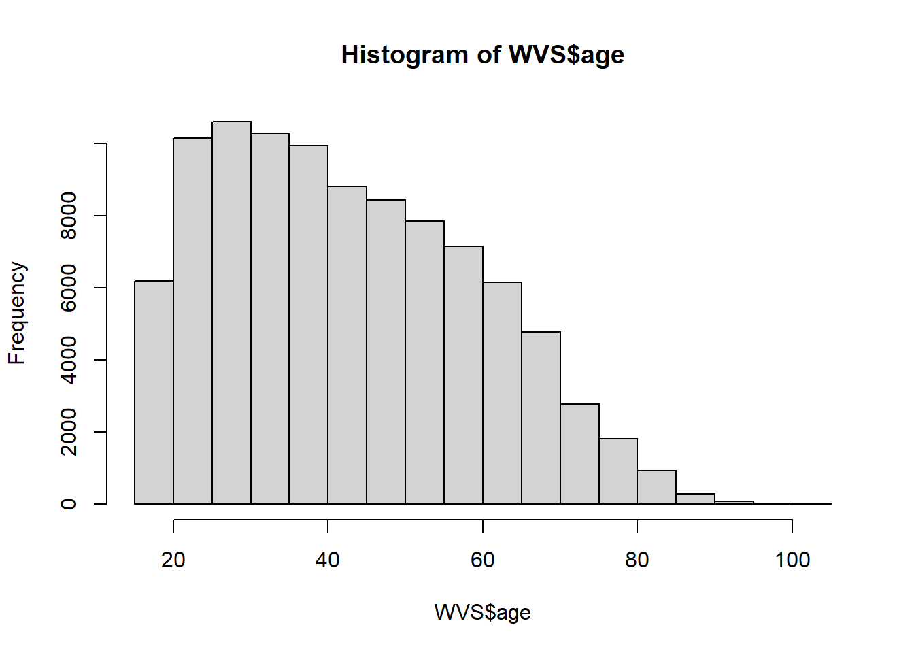
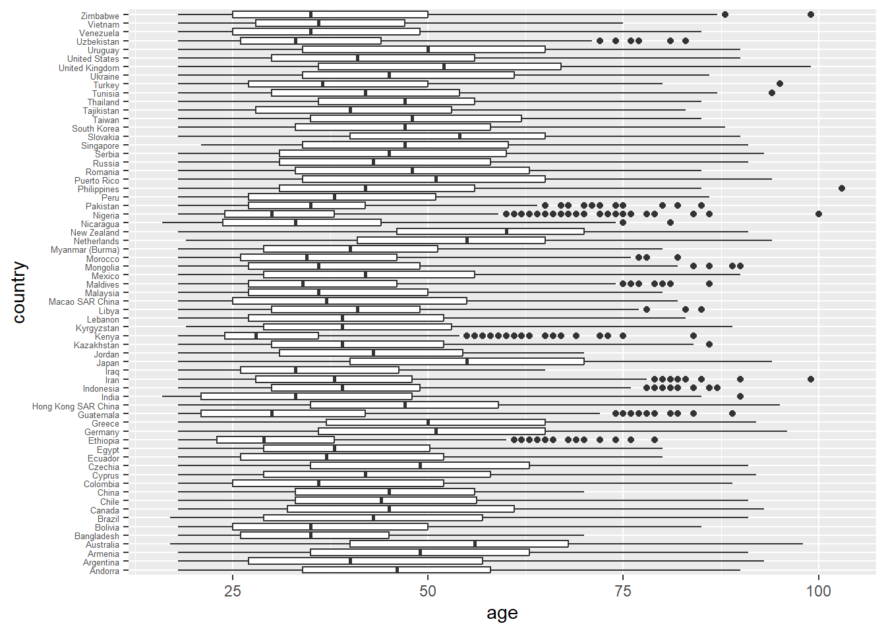
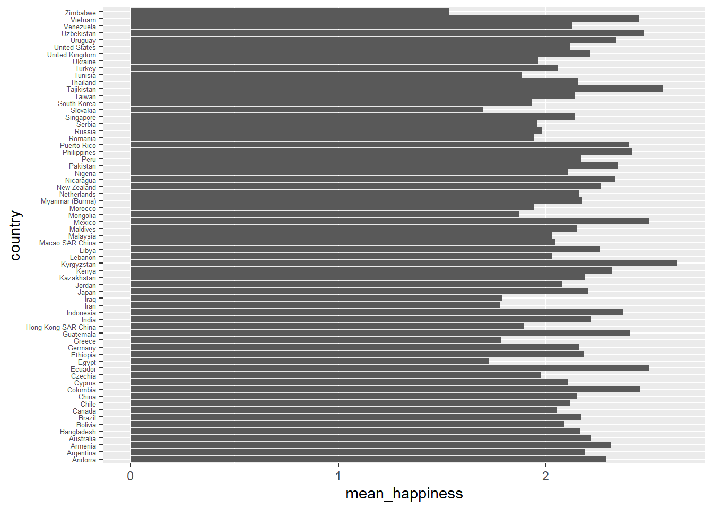
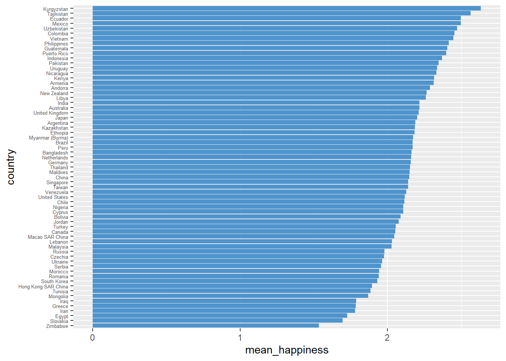
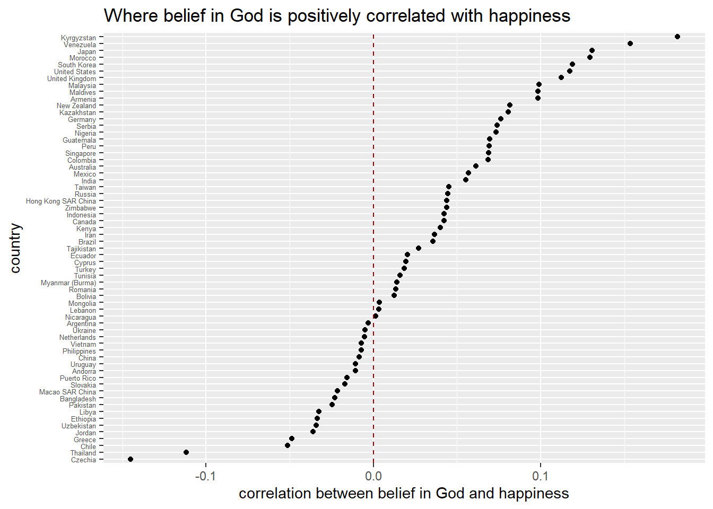
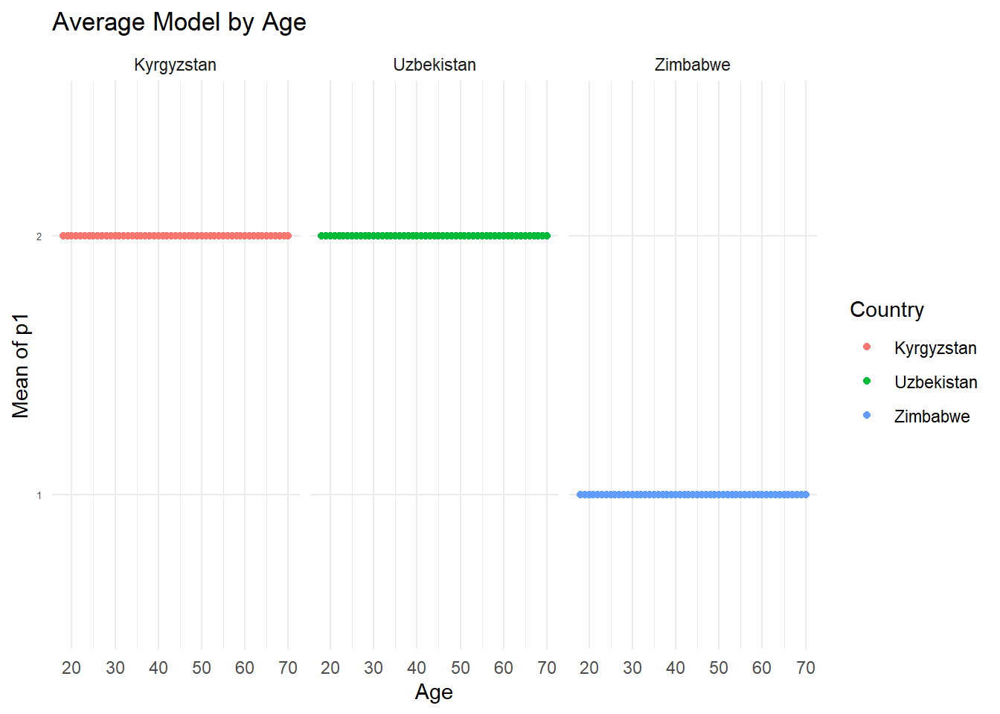
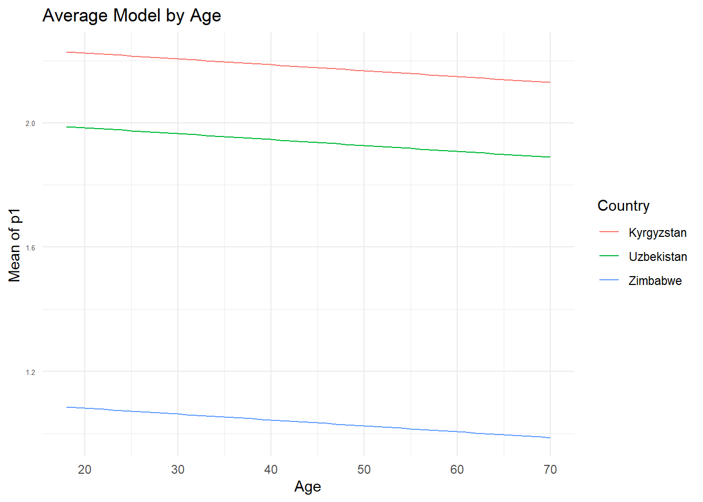
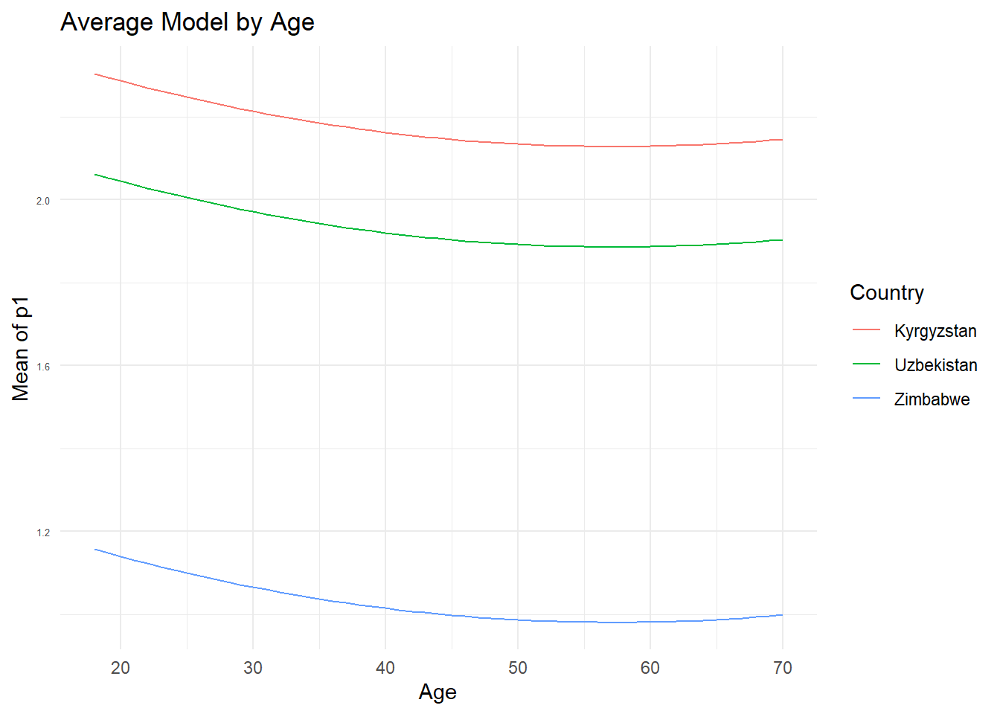

# install.packages("countrycode")
# install.packages("MASS")H4
Quarto
Quarto enables you to weave together content and executable code into a finished document. To learn more about Quarto see https://quarto.org.
Running Code
When you click the Render button a document will be generated that includes both content and the output of embedded code. You can embed code like this:
You can add options to executable code like this
library(tidyverse)── Attaching core tidyverse packages ──────────────────────── tidyverse 2.0.0 ──
✔ dplyr 1.1.4 ✔ readr 2.1.5
✔ forcats 1.0.0 ✔ stringr 1.5.1
✔ ggplot2 3.5.1 ✔ tibble 3.2.1
✔ lubridate 1.9.3 ✔ tidyr 1.3.1
✔ purrr 1.0.2
── Conflicts ────────────────────────────────────────── tidyverse_conflicts() ──
✖ dplyr::filter() masks stats::filter()
✖ dplyr::lag() masks stats::lag()
ℹ Use the conflicted package (<http://conflicted.r-lib.org/>) to force all conflicts to become errorslibrary(countrycode)
library(dplyr)
library(MASS)
Attaching package: 'MASS'
The following object is masked from 'package:dplyr':
selectThe echo: false option disables the printing of code (only output is displayed).
file_path <- file.choose()
load(file_path)
WVS = `WVS_Cross-National_Wave_7_v6_0` |> as.tibble()Warning: `as.tibble()` was deprecated in tibble 2.0.0.
ℹ Please use `as_tibble()` instead.
ℹ The signature and semantics have changed, see `?as_tibble`.WVS$happiness = case_when(WVS$Q46>0 ~ 4-WVS$Q46,
TRUE ~ NA_integer_) # ALL ELSE IS NA
table(WVS$happiness)
0 1 2 3
2104 11791 52581 30093 dim(WVS)[1] 97220 614head(WVS,5)# A tibble: 5 × 614
version doi A_WAVE A_YEAR A_STUDY B_COUNTRY B_COUNTRY_ALPHA C_COW_NUM
<chr> <chr> <int> <int> <int> <int> <chr> <int>
1 6-0-0 (2024-0… doi.… 7 2018 2 20 AND 232
2 6-0-0 (2024-0… doi.… 7 2018 2 20 AND 232
3 6-0-0 (2024-0… doi.… 7 2018 2 20 AND 232
4 6-0-0 (2024-0… doi.… 7 2018 2 20 AND 232
5 6-0-0 (2024-0… doi.… 7 2018 2 20 AND 232
# ℹ 606 more variables: C_COW_ALPHA <chr>, D_INTERVIEW <int>, S007 <int>,
# J_INTDATE <int>, FW_START <int>, FW_END <int>, K_TIME_START <dbl>,
# K_TIME_END <dbl>, K_DURATION <int>, Q_MODE <int>, N_REGION_ISO <int>,
# N_REGION_WVS <int>, N_REGION_NUTS2 <int>, N_REG_NUTS1 <int>, N_TOWN <int>,
# G_TOWNSIZE <int>, G_TOWNSIZE2 <int>, H_SETTLEMENT <int>, H_URBRURAL <int>,
# I_PSU <int>, O1_LONGITUDE <dbl>, O2_LATITUDE <dbl>,
# L_INTERVIEWER_NUMBER <int>, S_INTLANGUAGE <int>, LNGE_ISO <chr>, …WVS$country = countrycode(sourcevar = WVS$B_COUNTRY_ALPHA,
origin = "iso3c",
destination = "country.name")Warning: Some values were not matched unambiguously: NIRtable(WVS$country , useNA = "always")
Andorra Argentina Armenia Australia
1004 1003 1223 1813
Bangladesh Bolivia Brazil Canada
1200 2067 1762 4018
Chile China Colombia Cyprus
1000 3036 1520 1000
Czechia Ecuador Egypt Ethiopia
1200 1200 1200 1230
Germany Greece Guatemala Hong Kong SAR China
1528 1200 1229 2075
India Indonesia Iran Iraq
1692 3200 1499 1200
Japan Jordan Kazakhstan Kenya
1353 1203 1276 1266
Kyrgyzstan Lebanon Libya Macao SAR China
1200 1200 1196 1023
Malaysia Maldives Mexico Mongolia
1313 1039 1741 1638
Morocco Myanmar (Burma) Netherlands New Zealand
1200 1200 2145 1057
Nicaragua Nigeria Pakistan Peru
1200 1237 1995 1400
Philippines Puerto Rico Romania Russia
1200 1127 1257 1810
Serbia Singapore Slovakia South Korea
1046 2012 1200 1245
Taiwan Tajikistan Thailand Tunisia
1223 1200 1500 1208
Turkey Ukraine United Kingdom United States
2415 1289 2609 2596
Uruguay Uzbekistan Venezuela Vietnam
1000 1250 1190 1200
Zimbabwe <NA>
1215 447 WVS = WVS |> filter(!is.na(country))
range(WVS$Q262 , na.rm = TRUE) [1] -5 103WVS$age = ifelse(WVS$Q262>15, WVS$Q262, NA)
hist(WVS$age)
WVS |>
filter(!is.na(age)) |>
ggplot(aes(country, age)) +
geom_boxplot() +
coord_flip() +
theme(axis.text.y = element_text(size = 5)) 
WVS |>
group_by(country) |>
summarize(mean_happiness = mean(happiness, na.rm = TRUE)) |>
ggplot() +
aes(country , mean_happiness) +
geom_col()+
coord_flip()+
theme(axis.text.y = element_text(size = 5)) 
WVS |>
group_by(country) |>
summarize(mean_happiness = mean(happiness, na.rm = TRUE)) |>
arrange(mean_happiness) |>
# the following command tells R what the order of the countries
# as a categorical variable is
mutate(country = factor(country, levels = country)) |>
ggplot() +
aes(country , mean_happiness) +
geom_col(fill = 'steelblue3')+
coord_flip()+
theme(axis.text.y = element_text(size = 5)) 
WVS$belief_in_god = ifelse(WVS$Q165>0, 2-WVS$Q165, NA)
WVS_country = WVS |>
group_by(country) |>
summarize(cor_god_happ = cor(belief_in_god, happiness, use = "pairwise.complete.obs")) |>
arrange(cor_god_happ) |>
mutate(country = factor(country, levels = country))
WVS_country |>
filter(!is.na(cor_god_happ)) |>
ggplot(aes(country , cor_god_happ)) +
geom_point() +
geom_hline(yintercept = 0, linetype = "dashed", col='darkred') +
coord_flip() +
ggtitle('Where belief in God is positively correlated with happiness') +
ylab('correlation between belief in God and happiness')+
theme(axis.text.y = element_text(size = 5)) 
WVS_working <-WVS %>%
dplyr::select(
country,
belief_in_god,
Q112,
Q121,
Q131,
Q176,
age,
Q260,
Q270,
Q273,
Q274,
Q275,
Q269,
Q276,
Q285,
happiness,
Q286
)
WVS_working$corruption=ifelse(WVS_working$Q112>0,WVS_working$Q112,NA)
WVS_working$migration=ifelse(WVS_working$Q121>0,WVS_working$Q121,NA)
WVS_working$security=ifelse(WVS_working$Q131>0,5-WVS_working$Q131,NA)
WVS_working$moral=ifelse(WVS_working$Q176>0,11-WVS_working$Q176,NA)
WVS_working$citizen <- WVS_working$Q269 > 0
WVS_working$citizen <- ifelse(WVS_working$citizen == 2, 1,
ifelse(WVS_working$citizen == 1, 3,
ifelse(WVS_working$citizen == 3, 2,WVS_working$citizen)))
WVS_working$education=ifelse(WVS_working$Q276>0,WVS_working$Q276,NA)
WVS_working$wage_earner=ifelse(WVS_working$Q285>0,3-WVS_working$Q285,NA)
WVS_working$saving=ifelse(WVS_working$Q286>0,5-WVS_working$Q286,NA)
WVS_working <- WVS_working %>%
mutate(gender = case_when(
Q260 == 1 ~ "male",
Q260 == 2 ~ "female",
Q260 <= 0 ~ NA_character_
))
WVS_working <- WVS_working %>%
mutate(Marital = case_when(
Q273 == 1 ~ "Married",
Q273 == 2 ~ "Living together as married",
Q273 == 3 ~ "Divorced",
Q273 == 4 ~ "Separated",
Q273 == 5 ~ "Widowed",
Q273 == 6 ~ "Single",
Q273 <= 0 ~ NA_character_
))
WVS_working$child=ifelse(WVS_working$Q274>0,WVS_working$Q274,NA)
WVS_working$edu=ifelse(WVS_working$Q275>0,WVS_working$Q275,NA)WVS_working<- na.omit(WVS_working)
model_ols<-lm(happiness~country+corruption+migration+security+moral+citizen+wage_earner+age+belief_in_god+saving+gender+Marital+child+edu,data=WVS_working)
summary(model_ols)
Call:
lm(formula = happiness ~ country + corruption + migration + security +
moral + citizen + wage_earner + age + belief_in_god + saving +
gender + Marital + child + edu, data = WVS_working)
Residuals:
Min 1Q Median 3Q Max
-2.73458 -0.32583 -0.04988 0.51729 1.95643
Coefficients:
Estimate Std. Error t value Pr(>|t|)
(Intercept) 1.3263955 0.1256799 10.554 < 2e-16 ***
countryArgentina 0.1196325 0.0494453 2.419 0.015546 *
countryArmenia 0.3865506 0.0487970 7.922 2.40e-15 ***
countryAustralia 0.2021221 0.1197381 1.688 0.091412 .
countryBangladesh -0.0167253 0.0407251 -0.411 0.681304
countryBolivia 0.0079615 0.0382843 0.208 0.835263
countryBrazil 0.1980291 0.0411986 4.807 1.54e-06 ***
countryCanada -0.0054280 0.0345630 -0.157 0.875210
countryChile 0.0900808 0.0432869 2.081 0.037438 *
countryChina 0.0503126 0.1186605 0.424 0.671565
countryColombia 0.4138156 0.0413649 10.004 < 2e-16 ***
countryCyprus -0.0410371 0.0473169 -0.867 0.385793
countryCzechia -0.0829777 0.0416481 -1.992 0.046339 *
countryEcuador 0.4139031 0.0410434 10.085 < 2e-16 ***
countryEthiopia 0.0199093 0.0449520 0.443 0.657840
countryGermany 0.0852742 0.0393677 2.166 0.030309 *
countryGreece -0.2118816 0.0406618 -5.211 1.89e-07 ***
countryHong Kong SAR China -0.2228237 0.0379003 -5.879 4.15e-09 ***
countryIndia 0.0320377 0.0408391 0.784 0.432759
countryIndonesia 0.1733803 0.0345955 5.012 5.42e-07 ***
countryIran -0.3521358 0.0392909 -8.962 < 2e-16 ***
countryJapan 0.1499396 0.0423614 3.540 0.000401 ***
countryJordan -0.1249590 0.0403690 -3.095 0.001967 **
countryKazakhstan 0.0386115 0.0418905 0.922 0.356677
countryKenya 0.1906370 0.0425188 4.484 7.36e-06 ***
countryKyrgyzstan 0.4760431 0.0403589 11.795 < 2e-16 ***
countryLebanon -0.1565114 0.0402561 -3.888 0.000101 ***
countryLibya 0.0533618 0.0429626 1.242 0.214225
countryMacao SAR China -0.1279419 0.0452382 -2.828 0.004684 **
countryMalaysia -0.0711815 0.0396205 -1.797 0.072409 .
countryMaldives 0.0605840 0.0439815 1.377 0.168369
countryMexico 0.4420563 0.0372234 11.876 < 2e-16 ***
countryMongolia -0.2438665 0.0372618 -6.545 6.03e-11 ***
countryMorocco -0.2260151 0.0454805 -4.969 6.74e-07 ***
countryMyanmar (Burma) -0.0180782 0.0395048 -0.458 0.647228
countryNetherlands 0.0520933 0.0398139 1.308 0.190738
countryNew Zealand 0.1231687 0.0443461 2.777 0.005481 **
countryNicaragua 0.1945459 0.0417798 4.656 3.23e-06 ***
countryNigeria -0.1042672 0.0437506 -2.383 0.017166 *
countryPakistan 0.2016588 0.0411610 4.899 9.65e-07 ***
countryPeru 0.1777232 0.0412765 4.306 1.67e-05 ***
countryPhilippines 0.2606490 0.0387625 6.724 1.79e-11 ***
countryPuerto Rico 0.2616950 0.0420874 6.218 5.09e-10 ***
countryRomania -0.1979024 0.0413412 -4.787 1.70e-06 ***
countryRussia -0.1099905 0.0414235 -2.655 0.007928 **
countrySerbia -0.1560930 0.0430666 -3.624 0.000290 ***
countrySingapore -0.0582017 0.0378072 -1.539 0.123706
countrySlovakia -0.3488250 0.0416348 -8.378 < 2e-16 ***
countrySouth Korea -0.1820277 0.0381309 -4.774 1.81e-06 ***
countryTaiwan -0.0297938 0.0400167 -0.745 0.456558
countryTajikistan 0.2392746 0.0379340 6.308 2.86e-10 ***
countryThailand 0.0819462 0.0384660 2.130 0.033148 *
countryTunisia -0.3270057 0.0417576 -7.831 4.95e-15 ***
countryTurkey -0.0805657 0.0374433 -2.152 0.031429 *
countryUkraine -0.0680351 0.0421049 -1.616 0.106135
countryUnited States 0.0709918 0.0368854 1.925 0.054279 .
countryUruguay 0.3651909 0.0455294 8.021 1.08e-15 ***
countryUzbekistan 0.2353349 0.0403755 5.829 5.63e-09 ***
countryVenezuela -0.0153677 0.0419735 -0.366 0.714271
countryVietnam 0.2527599 0.0388234 6.511 7.57e-11 ***
countryZimbabwe -0.6670309 0.0397840 -16.766 < 2e-16 ***
corruption -0.0065003 0.0014331 -4.536 5.76e-06 ***
migration 0.0177612 0.0032302 5.498 3.85e-08 ***
security 0.1579390 0.0042242 37.389 < 2e-16 ***
moral -0.0032918 0.0011507 -2.861 0.004229 **
citizen 0.0204116 0.0378112 0.540 0.589318
wage_earner -0.0244682 0.0077998 -3.137 0.001708 **
age -0.0018988 0.0002639 -7.194 6.38e-13 ***
belief_in_god 0.0418991 0.0099454 4.213 2.53e-05 ***
saving 0.0733667 0.0035904 20.434 < 2e-16 ***
gendermale -0.0231323 0.0078596 -2.943 0.003250 **
MaritalLiving together as married 0.1639485 0.0324814 5.047 4.50e-07 ***
MaritalMarried 0.1772209 0.0307424 5.765 8.24e-09 ***
MaritalSeparated -0.0897908 0.0481931 -1.863 0.062449 .
MaritalSingle 0.0700838 0.0672866 1.042 0.297617
MaritalWidowed 0.0019564 0.0365872 0.053 0.957355
child 0.0043023 0.0024835 1.732 0.083219 .
edu 0.0058113 0.0018996 3.059 0.002220 **
---
Signif. codes: 0 '***' 0.001 '**' 0.01 '*' 0.05 '.' 0.1 ' ' 1
Residual standard error: 0.6287 on 42454 degrees of freedom
Multiple R-squared: 0.1564, Adjusted R-squared: 0.1549
F-statistic: 102.2 on 77 and 42454 DF, p-value: < 2.2e-16WVS_working<- na.omit(WVS_working)
model_poly_1 <- lm(happiness ~ country+corruption + migration + security + moral +
citizen+ wage_earner + poly(age, 1) +
belief_in_god + saving++gender+Marital+child+edu, data = WVS_working)
model_poly_2 <- lm(happiness ~ country+corruption + migration + security + moral +
citizen+ wage_earner + poly(age, 2) +
belief_in_god + saving++gender+Marital+child+edu, data = WVS_working)
model_poly_3 <-lm(happiness ~ country+corruption + migration + security + moral +
citizen+ wage_earner + poly(age, 3) +
belief_in_god + saving++gender+Marital+child+edu, data = WVS_working)
summary(model_poly_1)
Call:
lm(formula = happiness ~ country + corruption + migration + security +
moral + citizen + wage_earner + poly(age, 1) + belief_in_god +
saving + +gender + Marital + child + edu, data = WVS_working)
Residuals:
Min 1Q Median 3Q Max
-2.73458 -0.32583 -0.04988 0.51729 1.95643
Coefficients:
Estimate Std. Error t value Pr(>|t|)
(Intercept) 1.238662 0.124938 9.914 < 2e-16 ***
countryArgentina 0.119632 0.049445 2.419 0.015546 *
countryArmenia 0.386551 0.048797 7.922 2.40e-15 ***
countryAustralia 0.202122 0.119738 1.688 0.091412 .
countryBangladesh -0.016725 0.040725 -0.411 0.681304
countryBolivia 0.007962 0.038284 0.208 0.835263
countryBrazil 0.198029 0.041199 4.807 1.54e-06 ***
countryCanada -0.005428 0.034563 -0.157 0.875210
countryChile 0.090081 0.043287 2.081 0.037438 *
countryChina 0.050313 0.118660 0.424 0.671565
countryColombia 0.413816 0.041365 10.004 < 2e-16 ***
countryCyprus -0.041037 0.047317 -0.867 0.385793
countryCzechia -0.082978 0.041648 -1.992 0.046339 *
countryEcuador 0.413903 0.041043 10.085 < 2e-16 ***
countryEthiopia 0.019909 0.044952 0.443 0.657840
countryGermany 0.085274 0.039368 2.166 0.030309 *
countryGreece -0.211882 0.040662 -5.211 1.89e-07 ***
countryHong Kong SAR China -0.222824 0.037900 -5.879 4.15e-09 ***
countryIndia 0.032038 0.040839 0.784 0.432759
countryIndonesia 0.173380 0.034596 5.012 5.42e-07 ***
countryIran -0.352136 0.039291 -8.962 < 2e-16 ***
countryJapan 0.149940 0.042361 3.540 0.000401 ***
countryJordan -0.124959 0.040369 -3.095 0.001967 **
countryKazakhstan 0.038612 0.041891 0.922 0.356677
countryKenya 0.190637 0.042519 4.484 7.36e-06 ***
countryKyrgyzstan 0.476043 0.040359 11.795 < 2e-16 ***
countryLebanon -0.156511 0.040256 -3.888 0.000101 ***
countryLibya 0.053362 0.042963 1.242 0.214225
countryMacao SAR China -0.127942 0.045238 -2.828 0.004684 **
countryMalaysia -0.071182 0.039620 -1.797 0.072409 .
countryMaldives 0.060584 0.043982 1.377 0.168369
countryMexico 0.442056 0.037223 11.876 < 2e-16 ***
countryMongolia -0.243867 0.037262 -6.545 6.03e-11 ***
countryMorocco -0.226015 0.045481 -4.969 6.74e-07 ***
countryMyanmar (Burma) -0.018078 0.039505 -0.458 0.647228
countryNetherlands 0.052093 0.039814 1.308 0.190738
countryNew Zealand 0.123169 0.044346 2.777 0.005481 **
countryNicaragua 0.194546 0.041780 4.656 3.23e-06 ***
countryNigeria -0.104267 0.043751 -2.383 0.017166 *
countryPakistan 0.201659 0.041161 4.899 9.65e-07 ***
countryPeru 0.177723 0.041276 4.306 1.67e-05 ***
countryPhilippines 0.260649 0.038763 6.724 1.79e-11 ***
countryPuerto Rico 0.261695 0.042087 6.218 5.09e-10 ***
countryRomania -0.197902 0.041341 -4.787 1.70e-06 ***
countryRussia -0.109991 0.041424 -2.655 0.007928 **
countrySerbia -0.156093 0.043067 -3.624 0.000290 ***
countrySingapore -0.058202 0.037807 -1.539 0.123706
countrySlovakia -0.348825 0.041635 -8.378 < 2e-16 ***
countrySouth Korea -0.182028 0.038131 -4.774 1.81e-06 ***
countryTaiwan -0.029794 0.040017 -0.745 0.456558
countryTajikistan 0.239275 0.037934 6.308 2.86e-10 ***
countryThailand 0.081946 0.038466 2.130 0.033148 *
countryTunisia -0.327006 0.041758 -7.831 4.95e-15 ***
countryTurkey -0.080566 0.037443 -2.152 0.031429 *
countryUkraine -0.068035 0.042105 -1.616 0.106135
countryUnited States 0.070992 0.036885 1.925 0.054279 .
countryUruguay 0.365191 0.045529 8.021 1.08e-15 ***
countryUzbekistan 0.235335 0.040376 5.829 5.63e-09 ***
countryVenezuela -0.015368 0.041973 -0.366 0.714271
countryVietnam 0.252760 0.038823 6.511 7.57e-11 ***
countryZimbabwe -0.667031 0.039784 -16.766 < 2e-16 ***
corruption -0.006500 0.001433 -4.536 5.76e-06 ***
migration 0.017761 0.003230 5.498 3.85e-08 ***
security 0.157939 0.004224 37.389 < 2e-16 ***
moral -0.003292 0.001151 -2.861 0.004229 **
citizen 0.020412 0.037811 0.540 0.589318
wage_earner -0.024468 0.007800 -3.137 0.001708 **
poly(age, 1) -5.526058 0.768118 -7.194 6.38e-13 ***
belief_in_god 0.041899 0.009945 4.213 2.53e-05 ***
saving 0.073367 0.003590 20.434 < 2e-16 ***
gendermale -0.023132 0.007860 -2.943 0.003250 **
MaritalLiving together as married 0.163948 0.032481 5.047 4.50e-07 ***
MaritalMarried 0.177221 0.030742 5.765 8.24e-09 ***
MaritalSeparated -0.089791 0.048193 -1.863 0.062449 .
MaritalSingle 0.070084 0.067287 1.042 0.297617
MaritalWidowed 0.001956 0.036587 0.053 0.957355
child 0.004302 0.002484 1.732 0.083219 .
edu 0.005811 0.001900 3.059 0.002220 **
---
Signif. codes: 0 '***' 0.001 '**' 0.01 '*' 0.05 '.' 0.1 ' ' 1
Residual standard error: 0.6287 on 42454 degrees of freedom
Multiple R-squared: 0.1564, Adjusted R-squared: 0.1549
F-statistic: 102.2 on 77 and 42454 DF, p-value: < 2.2e-16summary(model_poly_2)
Call:
lm(formula = happiness ~ country + corruption + migration + security +
moral + citizen + wage_earner + poly(age, 2) + belief_in_god +
saving + +gender + Marital + child + edu, data = WVS_working)
Residuals:
Min 1Q Median 3Q Max
-2.7323 -0.3255 -0.0491 0.5151 1.9349
Coefficients:
Estimate Std. Error t value Pr(>|t|)
(Intercept) 1.233264 0.124843 9.878 < 2e-16 ***
countryArgentina 0.113259 0.049413 2.292 0.021906 *
countryArmenia 0.385033 0.048760 7.897 2.94e-15 ***
countryAustralia 0.194839 0.119649 1.628 0.103443
countryBangladesh -0.029700 0.040725 -0.729 0.465831
countryBolivia -0.005681 0.038291 -0.148 0.882061
countryBrazil 0.188875 0.041182 4.586 4.52e-06 ***
countryCanada -0.015987 0.034561 -0.463 0.643679
countryChile 0.086311 0.043256 1.995 0.046011 *
countryChina 0.056926 0.118572 0.480 0.631164
countryColombia 0.404606 0.041349 9.785 < 2e-16 ***
countryCyprus -0.050526 0.047295 -1.068 0.285378
countryCzechia -0.087287 0.041619 -2.097 0.035975 *
countryEcuador 0.403695 0.041031 9.839 < 2e-16 ***
countryEthiopia -0.004027 0.045013 -0.089 0.928711
countryGermany 0.072342 0.039369 1.838 0.066142 .
countryGreece -0.225610 0.040665 -5.548 2.91e-08 ***
countryHong Kong SAR China -0.225192 0.037872 -5.946 2.77e-09 ***
countryIndia 0.027769 0.040811 0.680 0.496229
countryIndonesia 0.167357 0.034577 4.840 1.30e-06 ***
countryIran -0.353174 0.039261 -8.996 < 2e-16 ***
countryJapan 0.127762 0.042416 3.012 0.002596 **
countryJordan -0.131350 0.040346 -3.256 0.001132 **
countryKazakhstan 0.032888 0.041864 0.786 0.432107
countryKenya 0.171395 0.042552 4.028 5.64e-05 ***
countryKyrgyzstan 0.466234 0.040346 11.556 < 2e-16 ***
countryLebanon -0.161380 0.040230 -4.011 6.04e-05 ***
countryLibya 0.050396 0.042931 1.174 0.240448
countryMacao SAR China -0.129595 0.045204 -2.867 0.004147 **
countryMalaysia -0.076467 0.039595 -1.931 0.053465 .
countryMaldives 0.053337 0.043957 1.213 0.224988
countryMexico 0.429995 0.037224 11.551 < 2e-16 ***
countryMongolia -0.253036 0.037250 -6.793 1.11e-11 ***
countryMorocco -0.227627 0.045446 -5.009 5.50e-07 ***
countryMyanmar (Burma) -0.024005 0.039481 -0.608 0.543184
countryNetherlands 0.041307 0.039805 1.038 0.299403
countryNew Zealand 0.106129 0.044361 2.392 0.016744 *
countryNicaragua 0.181269 0.041779 4.339 1.44e-05 ***
countryNigeria -0.122939 0.043777 -2.808 0.004982 **
countryPakistan 0.186757 0.041170 4.536 5.74e-06 ***
countryPeru 0.170235 0.041255 4.126 3.69e-05 ***
countryPhilippines 0.252663 0.038745 6.521 7.05e-11 ***
countryPuerto Rico 0.247091 0.042093 5.870 4.39e-09 ***
countryRomania -0.204146 0.041317 -4.941 7.80e-07 ***
countryRussia -0.116883 0.041400 -2.823 0.004756 **
countrySerbia -0.162392 0.043040 -3.773 0.000162 ***
countrySingapore -0.059279 0.037778 -1.569 0.116623
countrySlovakia -0.356490 0.041613 -8.567 < 2e-16 ***
countrySouth Korea -0.180981 0.038102 -4.750 2.04e-06 ***
countryTaiwan -0.035579 0.039992 -0.890 0.373661
countryTajikistan 0.232081 0.037915 6.121 9.38e-10 ***
countryThailand 0.082676 0.038437 2.151 0.031485 *
countryTunisia -0.327170 0.041725 -7.841 4.57e-15 ***
countryTurkey -0.078894 0.037415 -2.109 0.034983 *
countryUkraine -0.074926 0.042081 -1.781 0.074999 .
countryUnited States 0.058284 0.036890 1.580 0.114126
countryUruguay 0.356478 0.045507 7.833 4.85e-15 ***
countryUzbekistan 0.224013 0.040368 5.549 2.89e-08 ***
countryVenezuela -0.027156 0.041966 -0.647 0.517582
countryVietnam 0.248148 0.038798 6.396 1.61e-10 ***
countryZimbabwe -0.681278 0.039792 -17.121 < 2e-16 ***
corruption -0.006302 0.001432 -4.400 1.08e-05 ***
migration 0.017366 0.003228 5.380 7.50e-08 ***
security 0.156943 0.004223 37.167 < 2e-16 ***
moral -0.003328 0.001150 -2.894 0.003803 **
citizen 0.022173 0.037783 0.587 0.557309
wage_earner -0.018761 0.007825 -2.398 0.016511 *
poly(age, 2)1 -5.672234 0.767737 -7.388 1.51e-13 ***
poly(age, 2)2 5.334583 0.654566 8.150 3.74e-16 ***
belief_in_god 0.040943 0.009938 4.120 3.80e-05 ***
saving 0.072804 0.003588 20.289 < 2e-16 ***
gendermale -0.025599 0.007859 -3.257 0.001126 **
MaritalLiving together as married 0.158810 0.032463 4.892 1.00e-06 ***
MaritalMarried 0.176027 0.030719 5.730 1.01e-08 ***
MaritalSeparated -0.089213 0.048156 -1.853 0.063949 .
MaritalSingle 0.055222 0.067260 0.821 0.411632
MaritalWidowed -0.017983 0.036641 -0.491 0.623572
child 0.006602 0.002498 2.643 0.008214 **
edu 0.006447 0.001900 3.394 0.000690 ***
---
Signif. codes: 0 '***' 0.001 '**' 0.01 '*' 0.05 '.' 0.1 ' ' 1
Residual standard error: 0.6282 on 42453 degrees of freedom
Multiple R-squared: 0.1577, Adjusted R-squared: 0.1562
F-statistic: 101.9 on 78 and 42453 DF, p-value: < 2.2e-16summary(model_poly_3)
Call:
lm(formula = happiness ~ country + corruption + migration + security +
moral + citizen + wage_earner + poly(age, 3) + belief_in_god +
saving + +gender + Marital + child + edu, data = WVS_working)
Residuals:
Min 1Q Median 3Q Max
-2.73295 -0.32554 -0.04889 0.51516 1.93428
Coefficients:
Estimate Std. Error t value Pr(>|t|)
(Intercept) 1.233295 0.124845 9.879 < 2e-16 ***
countryArgentina 0.113182 0.049415 2.290 0.022001 *
countryArmenia 0.384969 0.048761 7.895 2.97e-15 ***
countryAustralia 0.194627 0.119655 1.627 0.103835
countryBangladesh -0.029844 0.040731 -0.733 0.463744
countryBolivia -0.005874 0.038302 -0.153 0.878109
countryBrazil 0.188802 0.041184 4.584 4.57e-06 ***
countryCanada -0.016005 0.034561 -0.463 0.643304
countryChile 0.086279 0.043257 1.995 0.046095 *
countryChina 0.056716 0.118577 0.478 0.632433
countryColombia 0.404475 0.041353 9.781 < 2e-16 ***
countryCyprus -0.050759 0.047308 -1.073 0.283292
countryCzechia -0.087306 0.041620 -2.098 0.035938 *
countryEcuador 0.403543 0.041037 9.834 < 2e-16 ***
countryEthiopia -0.004293 0.045031 -0.095 0.924049
countryGermany 0.072434 0.039372 1.840 0.065815 .
countryGreece -0.225433 0.040674 -5.542 3.00e-08 ***
countryHong Kong SAR China -0.225277 0.037875 -5.948 2.74e-09 ***
countryIndia 0.027738 0.040812 0.680 0.496724
countryIndonesia 0.167336 0.034577 4.839 1.31e-06 ***
countryIran -0.353123 0.039262 -8.994 < 2e-16 ***
countryJapan 0.127943 0.042425 3.016 0.002565 **
countryJordan -0.131496 0.040352 -3.259 0.001120 **
countryKazakhstan 0.032835 0.041865 0.784 0.432874
countryKenya 0.171216 0.042560 4.023 5.76e-05 ***
countryKyrgyzstan 0.466111 0.040350 11.552 < 2e-16 ***
countryLebanon -0.161378 0.040230 -4.011 6.05e-05 ***
countryLibya 0.050277 0.042935 1.171 0.241607
countryMacao SAR China -0.129653 0.045205 -2.868 0.004131 **
countryMalaysia -0.076526 0.039597 -1.933 0.053287 .
countryMaldives 0.053419 0.043959 1.215 0.224291
countryMexico 0.429854 0.037230 11.546 < 2e-16 ***
countryMongolia -0.253116 0.037252 -6.795 1.10e-11 ***
countryMorocco -0.227485 0.045451 -5.005 5.61e-07 ***
countryMyanmar (Burma) -0.024090 0.039483 -0.610 0.541787
countryNetherlands 0.041247 0.039807 1.036 0.300120
countryNew Zealand 0.106180 0.044362 2.393 0.016694 *
countryNicaragua 0.181095 0.041788 4.334 1.47e-05 ***
countryNigeria -0.123088 0.043783 -2.811 0.004936 **
countryPakistan 0.186710 0.041171 4.535 5.78e-06 ***
countryPeru 0.170213 0.041256 4.126 3.70e-05 ***
countryPhilippines 0.252526 0.038751 6.517 7.27e-11 ***
countryPuerto Rico 0.247041 0.042094 5.869 4.42e-09 ***
countryRomania -0.204196 0.041318 -4.942 7.76e-07 ***
countryRussia -0.116946 0.041402 -2.825 0.004735 **
countrySerbia -0.162458 0.043042 -3.774 0.000161 ***
countrySingapore -0.059362 0.037781 -1.571 0.116138
countrySlovakia -0.356597 0.041617 -8.569 < 2e-16 ***
countrySouth Korea -0.181114 0.038107 -4.753 2.01e-06 ***
countryTaiwan -0.035643 0.039994 -0.891 0.372816
countryTajikistan 0.231915 0.037923 6.115 9.72e-10 ***
countryThailand 0.082596 0.038439 2.149 0.031657 *
countryTunisia -0.327180 0.041726 -7.841 4.57e-15 ***
countryTurkey -0.078851 0.037416 -2.107 0.035087 *
countryUkraine -0.074977 0.042082 -1.782 0.074807 .
countryUnited States 0.058217 0.036892 1.578 0.114561
countryUruguay 0.356468 0.045507 7.833 4.87e-15 ***
countryUzbekistan 0.223931 0.040371 5.547 2.93e-08 ***
countryVenezuela -0.027249 0.041969 -0.649 0.516167
countryVietnam 0.248173 0.038798 6.397 1.61e-10 ***
countryZimbabwe -0.681408 0.039797 -17.122 < 2e-16 ***
corruption -0.006303 0.001432 -4.401 1.08e-05 ***
migration 0.017372 0.003228 5.381 7.44e-08 ***
security 0.156936 0.004223 37.164 < 2e-16 ***
moral -0.003328 0.001150 -2.894 0.003807 **
citizen 0.022110 0.037784 0.585 0.558443
wage_earner -0.018702 0.007830 -2.389 0.016919 *
poly(age, 3)1 -5.679262 0.768430 -7.391 1.49e-13 ***
poly(age, 3)2 5.336414 0.654628 8.152 3.68e-16 ***
poly(age, 3)3 -0.138339 0.638214 -0.217 0.828397
belief_in_god 0.040945 0.009939 4.120 3.80e-05 ***
saving 0.072786 0.003589 20.279 < 2e-16 ***
gendermale -0.025582 0.007860 -3.255 0.001136 **
MaritalLiving together as married 0.158715 0.032466 4.889 1.02e-06 ***
MaritalMarried 0.176016 0.030720 5.730 1.01e-08 ***
MaritalSeparated -0.089219 0.048157 -1.853 0.063934 .
MaritalSingle 0.054874 0.067280 0.816 0.414728
MaritalWidowed -0.017804 0.036651 -0.486 0.627129
child 0.006637 0.002503 2.652 0.008010 **
edu 0.006479 0.001905 3.400 0.000674 ***
---
Signif. codes: 0 '***' 0.001 '**' 0.01 '*' 0.05 '.' 0.1 ' ' 1
Residual standard error: 0.6282 on 42452 degrees of freedom
Multiple R-squared: 0.1577, Adjusted R-squared: 0.1562
F-statistic: 100.6 on 79 and 42452 DF, p-value: < 2.2e-16The degree 2 gives me the best fit
WVS_working<- na.omit(WVS_working)
WVS_working$happiness_factor<-as.factor(WVS_working$happiness)
levels(WVS_working$happiness_factor)[1] "0" "1" "2" "3"order_model_poly_1 <- polr(happiness_factor ~ country+corruption + migration + security + moral +
citizen+ wage_earner + poly(age, 1) +
belief_in_god + saving++gender+Marital+child+edu, data = WVS_working)
summary(order_model_poly_1)
Re-fitting to get HessianCall:
polr(formula = happiness_factor ~ country + corruption + migration +
security + moral + citizen + wage_earner + poly(age, 1) +
belief_in_god + saving + +gender + Marital + child + edu,
data = WVS_working)
Coefficients:
Value Std. Error t value
countryArgentina 0.443974 0.154353 2.87635
countryArmenia 1.377589 0.155156 8.87874
countryAustralia 0.631846 0.375287 1.68363
countryBangladesh -0.040442 0.125176 -0.32308
countryBolivia 0.144287 0.120917 1.19327
countryBrazil 0.652761 0.127408 5.12340
countryCanada 0.007691 0.105388 0.07298
countryChile 0.354115 0.134513 2.63256
countryChina 0.178377 0.372134 0.47934
countryColombia 1.563321 0.132545 11.79468
countryCyprus -0.059915 0.147591 -0.40595
countryCzechia -0.244874 0.127686 -1.91779
countryEcuador 1.591871 0.132005 12.05920
countryEthiopia 0.153272 0.140578 1.09029
countryGermany 0.317070 0.120872 2.62320
countryGreece -0.535072 0.126798 -4.21990
countryHong Kong SAR China -0.647055 0.116435 -5.55724
countryIndia 0.241231 0.127350 1.89423
countryIndonesia 0.604529 0.105857 5.71080
countryIran -0.959851 0.123179 -7.79231
countryJapan 0.498089 0.130420 3.81912
countryJordan -0.353281 0.124914 -2.82819
countryKazakhstan 0.170084 0.129268 1.31574
countryKenya 0.860738 0.135693 6.34326
countryKyrgyzstan 1.780321 0.131757 13.51211
countryLebanon -0.478996 0.124346 -3.85213
countryLibya 0.206159 0.132356 1.55761
countryMacao SAR China -0.396055 0.137991 -2.87015
countryMalaysia -0.180659 0.121875 -1.48234
countryMaldives 0.241217 0.136126 1.77202
countryMexico 1.572586 0.116486 13.50023
countryMongolia -0.710209 0.116229 -6.11041
countryMorocco -0.685057 0.139532 -4.90968
countryMyanmar (Burma) 0.077347 0.122541 0.63119
countryNetherlands 0.199491 0.121342 1.64403
countryNew Zealand 0.416259 0.135931 3.06229
countryNicaragua 0.825091 0.132003 6.25056
countryNigeria 0.057696 0.143732 0.40141
countryPakistan 0.819999 0.128564 6.37815
countryPeru 0.645259 0.129596 4.97900
countryPhilippines 0.938679 0.120451 7.79305
countryPuerto Rico 0.978054 0.131919 7.41404
countryRomania -0.583725 0.127862 -4.56526
countryRussia -0.326177 0.127176 -2.56477
countrySerbia -0.444435 0.132943 -3.34304
countrySingapore -0.140631 0.115846 -1.21394
countrySlovakia -0.994702 0.127944 -7.77453
countrySouth Korea -0.544635 0.115559 -4.71305
countryTaiwan -0.084218 0.122666 -0.68656
countryTajikistan 0.928267 0.118695 7.82059
countryThailand 0.344357 0.119551 2.88042
countryTunisia -0.985235 0.129070 -7.63334
countryTurkey -0.193308 0.115567 -1.67270
countryUkraine -0.187311 0.129938 -1.44154
countryUnited States 0.271996 0.112996 2.40714
countryUruguay 1.262680 0.143167 8.81960
countryUzbekistan 0.831412 0.125314 6.63463
countryVenezuela 0.118227 0.133513 0.88551
countryVietnam 0.850811 0.119293 7.13214
countryZimbabwe -1.920715 0.124652 -15.40856
corruption -0.017860 0.004601 -3.88161
migration 0.054686 0.010415 5.25081
security 0.515331 0.013975 36.87599
moral -0.010087 0.003699 -2.72696
citizen 0.050495 0.118823 0.42495
wage_earner -0.079227 0.024919 -3.17943
poly(age, 1) -18.115066 2.448664 -7.39794
belief_in_god 0.140877 0.031124 4.52631
saving 0.224390 0.011585 19.36908
gendermale -0.073963 0.025124 -2.94397
MaritalLiving together as married 0.492982 0.104016 4.73950
MaritalMarried 0.524933 0.098335 5.33820
MaritalSeparated -0.226485 0.156193 -1.45003
MaritalSingle 0.253887 0.219022 1.15918
MaritalWidowed 0.005385 0.116828 0.04610
child 0.017440 0.008004 2.17888
edu 0.015337 0.006054 2.53321
Intercepts:
Value Std. Error t value
0|1 -1.3785 0.3943 -3.4958
1|2 0.8482 0.3930 2.1581
2|3 3.8885 0.3935 9.8813
Residual Deviance: 78010.31
AIC: 78170.31 order_model_poly_2 <- polr(happiness_factor ~ country+corruption + migration + security + moral +
citizen+ wage_earner + poly(age, 3) +
belief_in_god + saving++gender+Marital+child+edu, data = WVS_working)
summary(order_model_poly_2)
Re-fitting to get HessianCall:
polr(formula = happiness_factor ~ country + corruption + migration +
security + moral + citizen + wage_earner + poly(age, 3) +
belief_in_god + saving + +gender + Marital + child + edu,
data = WVS_working)
Coefficients:
Value Std. Error t value
countryArgentina 0.423286 0.154463 2.74038
countryArmenia 1.376224 0.155192 8.86786
countryAustralia 0.612798 0.375452 1.63216
countryBangladesh -0.084977 0.125343 -0.67795
countryBolivia 0.096905 0.121088 0.80029
countryBrazil 0.623071 0.127520 4.88605
countryCanada -0.026430 0.105480 -0.25057
countryChile 0.344955 0.134528 2.56418
countryChina 0.204197 0.372318 0.54845
countryColombia 1.530807 0.132712 11.53478
countryCyprus -0.090838 0.147656 -0.61520
countryCzechia -0.257598 0.127737 -2.01664
countryEcuador 1.557840 0.132152 11.78822
countryEthiopia 0.066570 0.141033 0.47202
countryGermany 0.276008 0.120964 2.28174
countryGreece -0.579263 0.127018 -4.56048
countryHong Kong SAR China -0.653567 0.116450 -5.61245
countryIndia 0.228806 0.127396 1.79603
countryIndonesia 0.585429 0.105915 5.52733
countryIran -0.961742 0.123223 -7.80489
countryJapan 0.427442 0.130745 3.26927
countryJordan -0.373872 0.124991 -2.99119
countryKazakhstan 0.151685 0.129348 1.17269
countryKenya 0.793280 0.136006 5.83268
countryKyrgyzstan 1.752109 0.131895 13.28414
countryLebanon -0.493925 0.124363 -3.97165
countryLibya 0.197831 0.132409 1.49409
countryMacao SAR China -0.398795 0.138011 -2.88959
countryMalaysia -0.198724 0.121934 -1.62977
countryMaldives 0.217089 0.136204 1.59385
countryMexico 1.534615 0.116650 13.15577
countryMongolia -0.742245 0.116324 -6.38086
countryMorocco -0.688536 0.139539 -4.93438
countryMyanmar (Burma) 0.059195 0.122618 0.48276
countryNetherlands 0.163222 0.121449 1.34395
countryNew Zealand 0.357894 0.136066 2.63030
countryNicaragua 0.778732 0.132194 5.89083
countryNigeria -0.007064 0.143984 -0.04906
countryPakistan 0.772034 0.128792 5.99442
countryPeru 0.621485 0.129680 4.79243
countryPhilippines 0.912244 0.120544 7.56770
countryPuerto Rico 0.930723 0.132058 7.04784
countryRomania -0.602184 0.127968 -4.70574
countryRussia -0.348520 0.127214 -2.73963
countrySerbia -0.463914 0.133019 -3.48757
countrySingapore -0.143201 0.115860 -1.23599
countrySlovakia -1.020223 0.128061 -7.96671
countrySouth Korea -0.541409 0.115620 -4.68267
countryTaiwan -0.099974 0.122681 -0.81491
countryTajikistan 0.905321 0.118786 7.62142
countryThailand 0.348288 0.119576 2.91270
countryTunisia -0.984999 0.129062 -7.63197
countryTurkey -0.185127 0.115589 -1.60160
countryUkraine -0.208881 0.130017 -1.60657
countryUnited States 0.230753 0.113130 2.03971
countryUruguay 1.236987 0.143276 8.63362
countryUzbekistan 0.794619 0.125464 6.33342
countryVenezuela 0.074693 0.133607 0.55905
countryVietnam 0.836780 0.119350 7.01116
countryZimbabwe -1.968956 0.124770 -15.78071
corruption -0.017173 0.004605 -3.72934
migration 0.053457 0.010421 5.12963
security 0.512863 0.013985 36.67262
moral -0.010221 0.003701 -2.76164
citizen 0.057241 0.118881 0.48149
wage_earner -0.059754 0.025035 -2.38685
poly(age, 3)1 -18.987318 2.456028 -7.73090
poly(age, 3)2 18.295205 2.096279 8.72747
poly(age, 3)3 -1.290236 2.043891 -0.63126
belief_in_god 0.137182 0.031134 4.40621
saving 0.222819 0.011593 19.22042
gendermale -0.082066 0.025151 -3.26296
MaritalLiving together as married 0.476997 0.104104 4.58191
MaritalMarried 0.521885 0.098400 5.30370
MaritalSeparated -0.223551 0.156288 -1.43037
MaritalSingle 0.199575 0.219440 0.90948
MaritalWidowed -0.061001 0.117170 -0.52062
child 0.025537 0.008083 3.15944
edu 0.017851 0.006081 2.93552
Intercepts:
Value Std. Error t value
0|1 -1.3517 0.3945 -3.4263
1|2 0.8742 0.3932 2.2233
2|3 3.9181 0.3937 9.9516
Residual Deviance: 77933.52
AIC: 78097.52 order_model_poly_3 <-polr(happiness_factor ~ country+corruption + migration + security + moral +
citizen+ wage_earner + poly(age, 3) +
belief_in_god + saving++gender+Marital+child+edu, data = WVS_working)
summary(order_model_poly_3)
Re-fitting to get HessianCall:
polr(formula = happiness_factor ~ country + corruption + migration +
security + moral + citizen + wage_earner + poly(age, 3) +
belief_in_god + saving + +gender + Marital + child + edu,
data = WVS_working)
Coefficients:
Value Std. Error t value
countryArgentina 0.423286 0.154463 2.74038
countryArmenia 1.376224 0.155192 8.86786
countryAustralia 0.612798 0.375452 1.63216
countryBangladesh -0.084977 0.125343 -0.67795
countryBolivia 0.096905 0.121088 0.80029
countryBrazil 0.623071 0.127520 4.88605
countryCanada -0.026430 0.105480 -0.25057
countryChile 0.344955 0.134528 2.56418
countryChina 0.204197 0.372318 0.54845
countryColombia 1.530807 0.132712 11.53478
countryCyprus -0.090838 0.147656 -0.61520
countryCzechia -0.257598 0.127737 -2.01664
countryEcuador 1.557840 0.132152 11.78822
countryEthiopia 0.066570 0.141033 0.47202
countryGermany 0.276008 0.120964 2.28174
countryGreece -0.579263 0.127018 -4.56048
countryHong Kong SAR China -0.653567 0.116450 -5.61245
countryIndia 0.228806 0.127396 1.79603
countryIndonesia 0.585429 0.105915 5.52733
countryIran -0.961742 0.123223 -7.80489
countryJapan 0.427442 0.130745 3.26927
countryJordan -0.373872 0.124991 -2.99119
countryKazakhstan 0.151685 0.129348 1.17269
countryKenya 0.793280 0.136006 5.83268
countryKyrgyzstan 1.752109 0.131895 13.28414
countryLebanon -0.493925 0.124363 -3.97165
countryLibya 0.197831 0.132409 1.49409
countryMacao SAR China -0.398795 0.138011 -2.88959
countryMalaysia -0.198724 0.121934 -1.62977
countryMaldives 0.217089 0.136204 1.59385
countryMexico 1.534615 0.116650 13.15577
countryMongolia -0.742245 0.116324 -6.38086
countryMorocco -0.688536 0.139539 -4.93438
countryMyanmar (Burma) 0.059195 0.122618 0.48276
countryNetherlands 0.163222 0.121449 1.34395
countryNew Zealand 0.357894 0.136066 2.63030
countryNicaragua 0.778732 0.132194 5.89083
countryNigeria -0.007064 0.143984 -0.04906
countryPakistan 0.772034 0.128792 5.99442
countryPeru 0.621485 0.129680 4.79243
countryPhilippines 0.912244 0.120544 7.56770
countryPuerto Rico 0.930723 0.132058 7.04784
countryRomania -0.602184 0.127968 -4.70574
countryRussia -0.348520 0.127214 -2.73963
countrySerbia -0.463914 0.133019 -3.48757
countrySingapore -0.143201 0.115860 -1.23599
countrySlovakia -1.020223 0.128061 -7.96671
countrySouth Korea -0.541409 0.115620 -4.68267
countryTaiwan -0.099974 0.122681 -0.81491
countryTajikistan 0.905321 0.118786 7.62142
countryThailand 0.348288 0.119576 2.91270
countryTunisia -0.984999 0.129062 -7.63197
countryTurkey -0.185127 0.115589 -1.60160
countryUkraine -0.208881 0.130017 -1.60657
countryUnited States 0.230753 0.113130 2.03971
countryUruguay 1.236987 0.143276 8.63362
countryUzbekistan 0.794619 0.125464 6.33342
countryVenezuela 0.074693 0.133607 0.55905
countryVietnam 0.836780 0.119350 7.01116
countryZimbabwe -1.968956 0.124770 -15.78071
corruption -0.017173 0.004605 -3.72934
migration 0.053457 0.010421 5.12963
security 0.512863 0.013985 36.67262
moral -0.010221 0.003701 -2.76164
citizen 0.057241 0.118881 0.48149
wage_earner -0.059754 0.025035 -2.38685
poly(age, 3)1 -18.987318 2.456028 -7.73090
poly(age, 3)2 18.295205 2.096279 8.72747
poly(age, 3)3 -1.290236 2.043891 -0.63126
belief_in_god 0.137182 0.031134 4.40621
saving 0.222819 0.011593 19.22042
gendermale -0.082066 0.025151 -3.26296
MaritalLiving together as married 0.476997 0.104104 4.58191
MaritalMarried 0.521885 0.098400 5.30370
MaritalSeparated -0.223551 0.156288 -1.43037
MaritalSingle 0.199575 0.219440 0.90948
MaritalWidowed -0.061001 0.117170 -0.52062
child 0.025537 0.008083 3.15944
edu 0.017851 0.006081 2.93552
Intercepts:
Value Std. Error t value
0|1 -1.3517 0.3945 -3.4263
1|2 0.8742 0.3932 2.2233
2|3 3.9181 0.3937 9.9516
Residual Deviance: 77933.52
AIC: 78097.52 ages <- 18:70
countries <- c("Uzbekistan", "Zimbabwe", "Kyrgyzstan")
age <- rep(ages, length(countries))
country <- rep(countries, each = length(ages))
corruption <- 1
migration <- 1
security <- 1
moral <- 2
citizen <- 1
wage_earner <- 1
belief_in_god <- 1
education <- 3
saving <- 2
gender="male"
Marital="Single"
child=6
edu=7
fake_data <- data.frame(
age = age,
country = country,
corruption = corruption,
migration = migration,
security = security,
moral = moral,
citizen = citizen,
wage_earner = wage_earner,
belief_in_god = belief_in_god,
education = education,
saving = saving,
gender=gender,
Marital=Marital,
child=child,
edu=edu
)
fake_data$p1 <- predict(model_poly_1, newdata = fake_data)
fake_data$p2<- predict(model_poly_2, newdata = fake_data)
fake_data$p3<- predict(model_poly_3, newdata = fake_data)
fake_data$p_order<-predict(order_model_poly_1, newdata = fake_data)
fake_data$p_order2<-predict(order_model_poly_2, newdata = fake_data)
fake_data$p_order3<-predict(order_model_poly_3, newdata = fake_data)#this part is the require plot for HW other plot is for fun
fake_data %>%
ggplot(aes(x = age, y = p_order, color =country)) +
geom_point() +
facet_wrap(~country)+
theme_minimal() +
theme(axis.text.y = element_text(size = 5)) +
labs(x = "Age", y = "Mean of p1", title = "Average Model by Age", color = "Country")
p1_model <- fake_data %>%
group_by(country, age) %>%
summarise(mean_p1 = mean(p1))`summarise()` has grouped output by 'country'. You can override using the
`.groups` argument.p1_model$country <- factor(p1_model$country)
p1_model %>%
ggplot(aes(x = age, y = mean_p1, color =country)) +
geom_line() +
theme_minimal() +
theme(axis.text.y = element_text(size = 5)) +
labs(x = "Age", y = "Mean of p1", title = "Average Model by Age", color = "Country")
p2_model <- fake_data %>%
group_by(country, age) %>%
summarise(mean_p2 = mean(p2))`summarise()` has grouped output by 'country'. You can override using the
`.groups` argument.p2_model$country <- factor(p2_model$country)
p2_model %>%
ggplot(aes(x = age, y = mean_p2, color =country)) +
geom_line() +
theme_minimal() +
theme(axis.text.y = element_text(size = 5)) +
labs(x = "Age", y = "Mean of p1", title = "Average Model by Age", color = "Country")
#model with world bank data
WB_data <- read.csv("C:/Users/Frank/Desktop/H4/P_Data_Extract_From_World_Development_Indicators/fbb54597-0836-45b0-b44a-e3522428acd5_Series - Metadata.csv")
WB_working <- WB_data %>% dplyr::select(Country.Name, Series.Name, Year)
WB_working<-WB_working%>%
pivot_wider(names_from =Series.Name, values_from =Year)
bonus<-WVS_working%>%inner_join(WB_working,by=join_by(country==Country.Name))
bonus$GDP_per_capital=as.numeric(bonus$`GDP per capita (current US$)`)
bonus<- na.omit(bonus)
aggregated_data <- bonus %>%
group_by(country) %>%
summarize(
happiness_avg = mean(happiness, na.rm = TRUE),
corruption_avg = mean(corruption, na.rm = TRUE),
migration_avg = mean(migration, na.rm = TRUE),
GDP_per_capital = first(GDP_per_capital)
)
model_aggregated <- lm(happiness_avg ~ corruption_avg + migration_avg + GDP_per_capital, data = aggregated_data)
summary(model_aggregated)
Call:
lm(formula = happiness_avg ~ corruption_avg + migration_avg +
GDP_per_capital, data = aggregated_data)
Residuals:
Min 1Q Median 3Q Max
-0.72511 -0.12577 -0.01307 0.16348 0.39451
Coefficients:
Estimate Std. Error t value Pr(>|t|)
(Intercept) 1.862e+00 3.599e-01 5.175 5.13e-06 ***
corruption_avg -7.791e-03 2.945e-02 -0.265 0.7926
migration_avg 1.386e-01 7.215e-02 1.921 0.0611 .
GDP_per_capital -3.429e-07 1.739e-06 -0.197 0.8446
---
Signif. codes: 0 '***' 0.001 '**' 0.01 '*' 0.05 '.' 0.1 ' ' 1
Residual standard error: 0.2125 on 45 degrees of freedom
Multiple R-squared: 0.09446, Adjusted R-squared: 0.03409
F-statistic: 1.565 on 3 and 45 DF, p-value: 0.211From the model I do not find the close relationship between GDP per capital with happiness